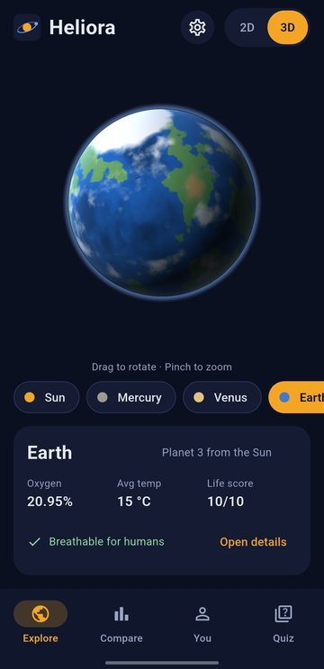
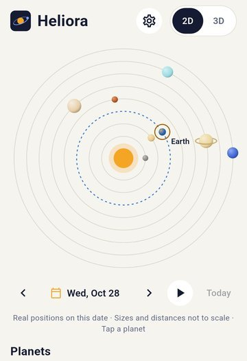
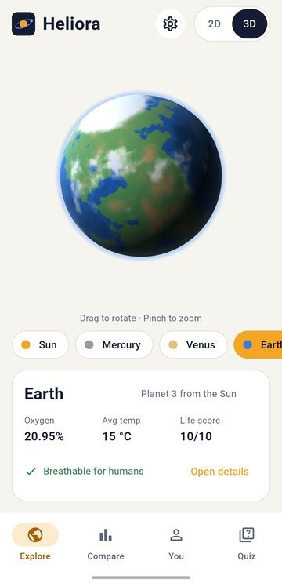
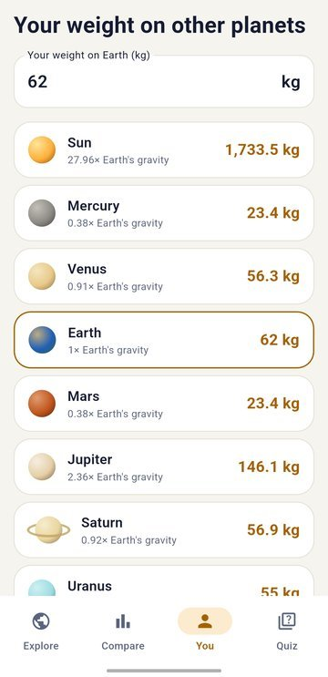
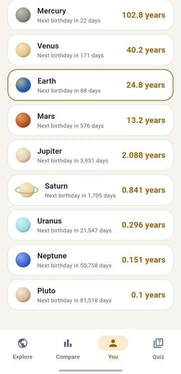
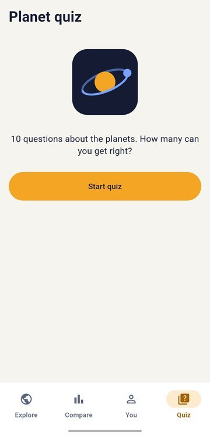
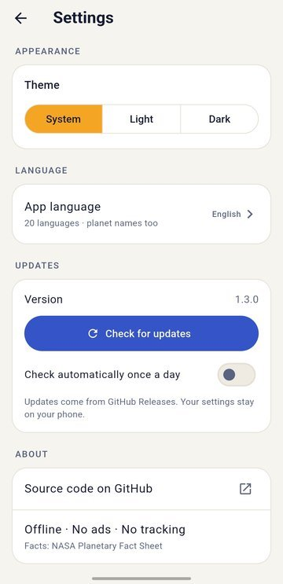

Heliora
Explore the Solar System, offline first. Real planet positions, rotating 3D worlds, atmospheres and oxygen, tonight's sky from your city and an honest answer to "could humans live here?"
Android · 20 languages · Works offline · GitHub only

Screenshots






Screenshots may show an older look. Newer versions add the Sky tab, space events, eclipses and the compass finder.
Why Heliora
Real positions
Every planet sits where it really is around the Sun, for any date from 1800 to 2050, worked out on your phone.
No images shipped
One shader draws every 3D surface from noise, so the app stays small and works with no internet.
Private by design
No ads, no account, no tracking. Your birth date and settings stay on your phone.
Free forever
Open source under the MIT license. No ads, no in-app purchases and no locked features.
Features
Explore
- 2D map with real positions: pick any date from 1800 to 2050, step 30 days back or forward, or press play and watch the planets move
- 3D worlds: rotate and zoom Earth with moving clouds, Jupiter's Great Red Spot, Saturn's rings, the glowing Sun and the cracked ice of Europa
- 18 worlds: the Sun, all 8 planets, Pluto, our Moon and 7 famous moons
Learn
- Planet facts: diameter, gravity, temperature, length of day and year, known moons, distance from the Sun and surface pressure
- Atmosphere and oxygen: what each atmosphere is made of and how its oxygen compares with Earth's
- Could humans live here? A simple 0 to 10 life score for every world. Earth scores 10, Mars 4, Jupiter 0
- How far is it? Today's real distance from Earth, and how long light, a spacecraft or a car would need
- Compare any two worlds side by side, with their true sizes drawn next to each other
Tonight's sky
- Which planets can I see tonight? Pick your city (no location permission) and see which planets are up after dark, the best time to look, the direction and how high, plus rise and set times
- The Moon tonight: phase, how much is lit, moonrise and moonset, and the next full and new moon
- Sunset and sunrise for your city
- Space events for the next 12 months: moon phases, oppositions, planet meetings, equinoxes, solstices and meteor showers. Tap the bell and Heliora reminds you the evening before, made on your phone
- Eclipses: solar and lunar eclipses for the next 12 months, with a bell for each and a rough local guide. Always use eclipse glasses to look at the Sun
- Tonight in the sky (optional): a short evening note about the Moon and the bright planets, worked out on your phone
- Find it with your compass: hold your phone up and Heliora shows which way to turn and tilt to point at the Moon or a planet. Motion sensors only: no camera, no location
Optional online features
- Off by default. Turn on Online features in Settings to see where the International Space Station is right now on a map, when it passes over your city and whether you can see it
- The list of upcoming rocket launches in the events calendar, with reminders
- The station's orbit data is saved on the phone, so it keeps working offline for days. Switch the setting off and Heliora never contacts these services
You
- Search and favourites: find planets, moons, missions and spacecraft in your own language, and star the ones you love
- My birthday sky: the Moon's phase and where the planets were on the day you were born, plus your 10,000th day and other round numbers
- Spacecraft now: how far Voyager, New Horizons, Webb and the Mars rovers are from Earth, and how long a radio signal needs to reach them
- Your weight on every world, from the Moon to the Sun
- Your age on other planets and the date of your next birthday there
- Quiz: 10 questions built from the planet data, with your best score saved
- Share a planet's card as a picture and send it to your friends
Made for everyone
- Light, dark or system theme
- 20 languages, with translated planet names. Arabic and Urdu read right to left
- In-app updates: new versions download inside the app with a progress bar, then the Android installer opens. Your settings are kept
Where the data comes from
- Planet facts: NASA Planetary Fact Sheet.
- Positions and distances: Keplerian orbital elements from JPL (Standish), valid 1800 to 2050 and solved on the phone.
- Life score: six simple rules. It is a teaching aid, not science.
- Space station: orbit data downloaded once, the position is worked out on the phone. Rocket launches: from Launch Library 2.
Private by design
No ads, no account and no tracking. Planet data, positions and 3D surfaces are all worked out on your phone. Your birth date, chosen city and settings stay on your device. Online features are off until you switch them on. Besides that, the internet is used only for updates: Heliora looks for a new version on GitHub once a day, which you can switch off in Settings, and downloads one only when you tap Download and install. Nothing about you is sent. Read the full privacy policy.
Install
- Open the latest release on your Android phone.
- Download
Heliora-vX.Y.Z.apkand open it. - If Android asks, allow your browser to install apps.
GitHub only, on purpose. After that, Heliora updates itself: open Settings › Check for updates, or let it check once a day.
App details
- Platform
- Android
- Current version
- 1.11.0
- Price
- Free, no ads, no in-app purchases
- Languages
- 20
- Internet
- Not needed. Only for updates and the optional online features, which are off by default
- License
- MIT
- Source code
- github.com/lumio-apps/heliora
- Privacy policy
- Read the privacy policy
- Report a problem
- GitHub Issues